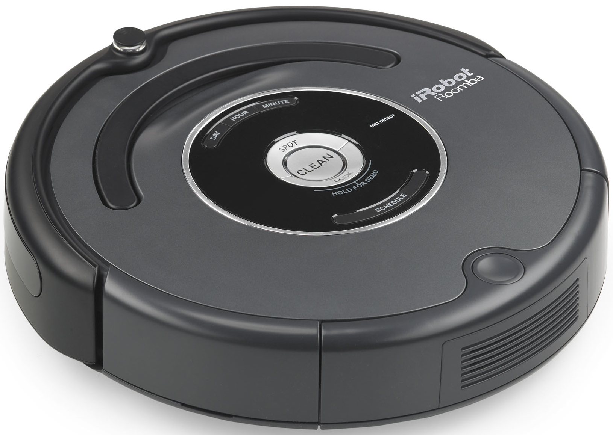

Roomba és un aspirador robòtic fabricat i venut per l'empresa iRobot.
El Roomba es va començar a vendre al públic el 2002, i es calcula que el febrer de 2014 ja s'havien venut més de 10 milions d'unitats a tot el món. El robot inlou una sèria de sensors (tàctils, òptics i acústics, depenent del model) que li permet detectar obstacles, acomulacions de residus al mig del pas i desnivells com escales. Utilitza dos rodes independents que li permeten executar girs de 360º.
Funcionament
La forma més habitual de netejar dels Roomba és en forma d'espiral.
El mode de neteja Spot està pensat per àrees petites, ja que el robot fa espirals concèntriques i superposades fins que determina que la zona ha quedat neta.
El mode de neteja Dock, fa que el robot realitzi el seu patró de neteja habitual i torni sol a la base de càrrega quan detecti que té poca bateria. El sensor d'infrarojos que porten, els permet detectar obstacles, aminorar la velocitat per evitar forts xocs contra les parets o objectes.
Als models més avançats et bé amb el Roomba un dispositiu que projecta una paret virtual invisble per a l'ull humà però que el sensor del Roomba detecta i et permet determinar zones a les que vols que netegi.
Funcions i Prestacions
Aquest robot ens permet estar treballant o fent deures a casa mentre ell neteja el terra i ja que li pots programar a l'hora que vols que comenci i detecta quan té bateria baixa i es posa a carregar automaticament, no t'has de preocupar mai de posar-lo en marxa, només d'anar buidant la bossa de la brutícia de tant en tant.